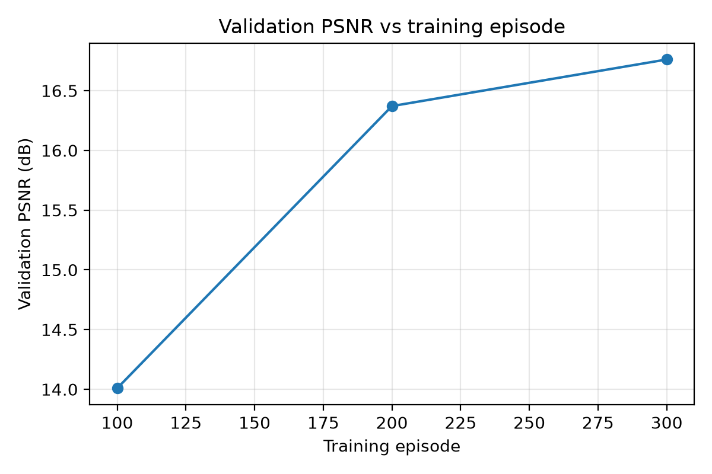
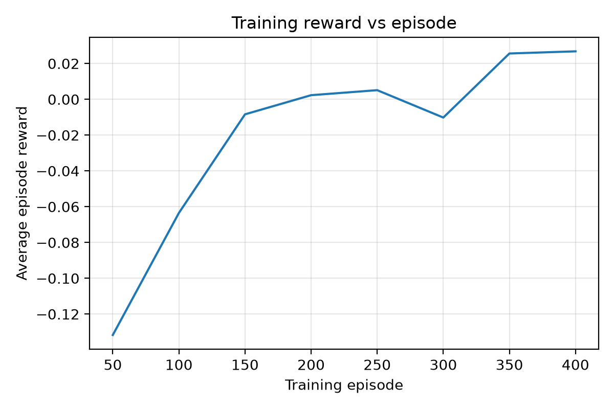
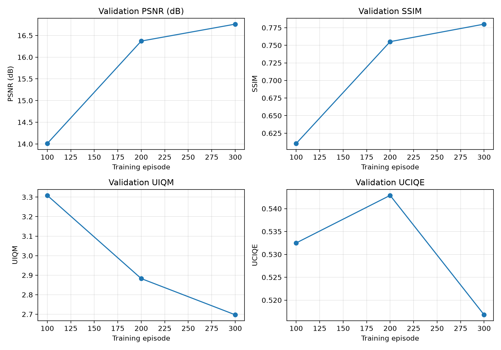

01. Image input
An underwater image is selected by the user and submitted to the restoration API.
DeepSea Restore uses a trained Deep Deterministic Policy Gradient (DDPG) model to improve underwater images and help reveal details affected by color distortion, haze, and poor visibility.
Try image restorationUpload an optional clean reference image first, then upload the underwater image. The trained DDPG model processes the underwater image through the backend and returns a restored result with available metrics.
Choose an underwater photo to restore.
You can also drag and drop an image here.PSNR and SSIM require a suitable reference image. UIQM and UCIQE are no-reference image quality metrics. Scores are calculated by the backend when available.
The application sends the uploaded image to the backend, where the trained model generates a restored image.
An underwater image is selected by the user and submitted to the restoration API.
The backend uses the available trained DDPG model to process the input image.
The restored image and available quality metrics are returned to the website for inspection.
Different metrics assess different aspects of image quality. They should be interpreted together rather than treated as interchangeable measurements.
Peak Signal-to-Noise Ratio measures pixel-level reconstruction error relative to a reference image. Higher values generally indicate lower reconstruction error.
Structural Similarity compares luminance, contrast, and structural information between an image and its reference.
These no-reference metrics estimate aspects of underwater image quality without requiring a clean reference image. Their scores do not necessarily prove that an image is perceptually better in every situation.
Training plots can be displayed here to show model learning progress and evaluation trends across episodes.

Peak Signal-to-Noise Ratio across training episodes.

Reward trends during model training.

Available image quality metrics recorded during training.
Training charts must be generated by your training pipeline and included in the frontend deployment.
This project combines reinforcement learning, underwater image processing, model evaluation, and web application development to explore underwater image restoration.